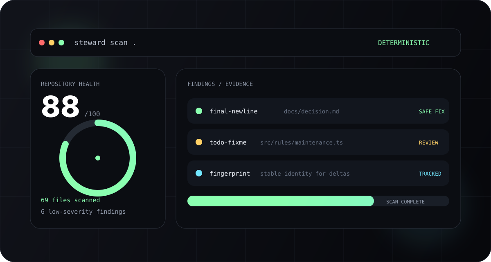

Deterministic scans
The same repository state should produce the same useful finding. Stable fingerprints make issues trackable across changes.
gODtECH Steward turns software housekeeping into a repeatable engineering step. Scan deterministically, understand the finding, fix only what is safe, and keep a machine-readable trail of repository health.

Steward focuses on evidence-backed repository health instead of pretending every cleanup task needs artificial intelligence (AI) or destructive automation.
The same repository state should produce the same useful finding. Stable fingerprints make issues trackable across changes.
Every result tells you what was found, where it was found, how confident Steward is, and what remediation makes sense.
Scanning never writes. Fixes require explicit --safe, and dry runs never mutate your repository.
Human reports, JSON output, health deltas, Continuous Integration (CI) decisions, and FORGE evidence all share the same core scan contract.
Steward keeps ordinary repository facts deterministic and leaves architecture decisions, product judgment, and orchestration to the systems that own those jobs.
steward scan .Collect repository facts, apply versioned rule packs, and produce stable findings.
steward doctor .See health, severity counts, categories, and the issues that deserve attention.
steward fix --safeApply only findings with an explicit deterministic safe-fix capability.
steward report --output ...Persist JSON reports, compare health over time, or export evidence for other systems.
README, ignore files, large files, tracked disposable outputs, generated artifacts.
Tracked environment files and high-confidence secret-like patterns without exposing secret values.
Broken or malformed local Markdown links and other documentation consistency issues.
Package-manager metadata and lockfile consistency, including conflicting lockfiles.
Merge-conflict markers, TODO/FIXME maintenance signals, and stale development artifacts.
Package identity, descriptions, and publishable metadata where the repository exposes them.
Steward 0.1.0 is published to npm as @godtech/steward. The GitHub release also carries the package tarball, checksum file, and Software Bill of Materials (SBOM).
Install globally from npm
npm install -g @godtech/steward@0.1.0Scan a repository
steward scan .
steward doctor .
steward scan . --jsonInstall globally from npm
npm.cmd install -g @godtech/steward@0.1.0PowerShell may block the generated steward.ps1 shim. You can invoke the Windows command shim directly:
steward.cmd --version
steward.cmd scan .A real Steward 0.1.0 scan can be read by a human or consumed as structured data by another tool.
PS C:\project> steward.cmd scan .
gODtECH Steward
Health 88/100
69 files scanned | 69 text files | 677ms
Git MASTER @ 5632bf3a
Findings: 6
Critical 0 | High 0 | Medium 0 | Low 6 | Info 0
[LOW] final-newline .forge/decisions/0004-trusted-external-rule-packs.md
[LOW] todo-fixme src/rules/maintenance.ts:17
[LOW] todo-fixme test/delta.test.ts:9
[LOW] todo-fixme test/forge-evidence.test.ts:9
[LOW] todo-fixme test/rule-packs.test.ts:35
[LOW] todo-fixme test/rules.test.ts:51
SAFE FIX available for the final-newline finding.
PS C:\project> steward.cmd scan . --json
{ "schemaVersion": 1, "healthScore": 88, ... }Steward is intentionally independent. Integrations use public commands and versioned machine-readable contracts rather than private implementation imports.
FORGE can call Steward when repository-health evidence or safe maintenance belongs in a governed workflow.
Open FORGE →StackPilot owns scaffolding and golden paths. It may consume Steward findings without duplicating generic housekeeping rules.
Open StackPilot →Steward remains a focused maintenance engine you can use with or without either neighboring system.
Open Steward →Steward does not delete uncertain files, mutate the repository during scanning, expose credentials in findings, or execute arbitrary external JavaScript rule packages.
--safe is required for remediation.--dry-run never writes.Run Steward locally, add it to Continuous Integration, export FORGE evidence, and keep the repository's maintenance state visible over time.